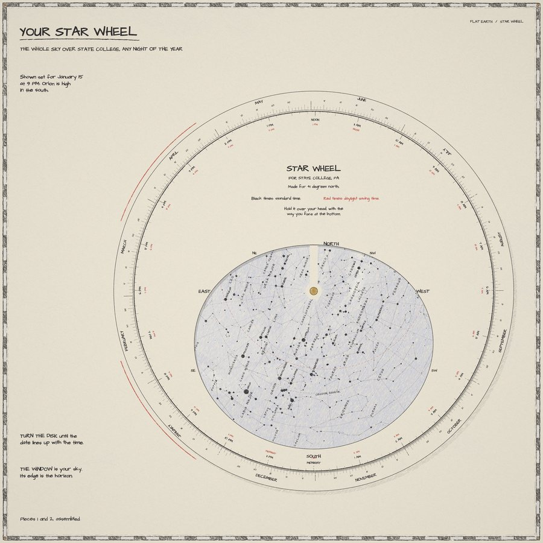
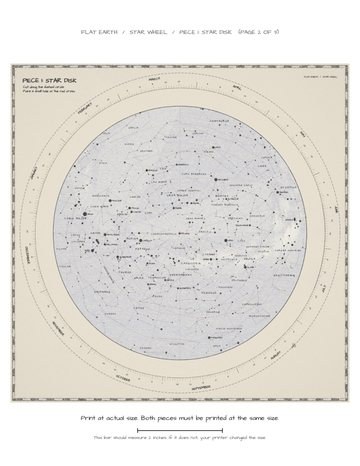

THE BUTTERFLY MAP
CAHILL BUTTERFLY / 8 TRIANGLES
Eight triangles fold into a pointy globe called an octahedron. It comes out about 4 inches across on Letter paper and about 6 inches on Tabloid.
Things from the book to print at home. Each one is a free PDF. Print it, cut it out, and make something you can hold.
Every flat map stretches the world somewhere. A globe does not. No globe at home? Print one of these maps, cut it out, and fold it back up into a world you can hold in your hand.
CAHILL BUTTERFLY / 8 TRIANGLES
Eight triangles fold into a pointy globe called an octahedron. It comes out about 4 inches across on Letter paper and about 6 inches on Tabloid.
DYMAXION / 20 TRIANGLES
Twenty triangles fold into a rounder globe called an icosahedron. It comes out about 3 inches across on Letter paper and about 5 inches on Tabloid.
Tip for grown-ups: the last few points are fiddly. A small piece of tape holds the shape while the glue dries.
A spinning map of the sky over State College. Turn it to any date and time, and its window shows the stars over your head right then. It is made for 41 degrees north, so it works from Virginia to New York.


The pieces in the book are 12 inches wide, too big for most printers. These packs shrink all three pages by the same amount, so they fit. Pick the paper you have.
Full size, 12 x 12 inches, the same as the book. For a big printer or a print shop. Print both pieces at the same size.